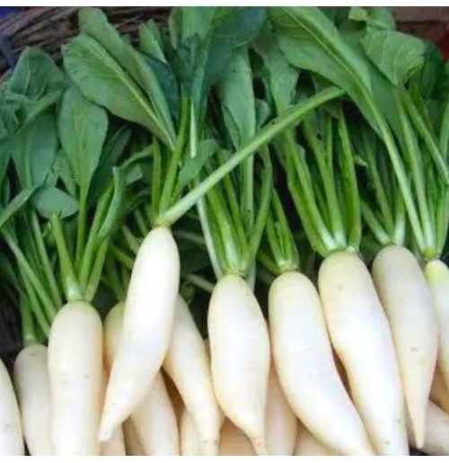

RADISH
Introduction

The radish (Raphanus raphanistrum subsp. sativus) is an edible root vegetable of the mustard family, Brassicaceae, that was domesticated in Asia prior to Roman times.
Radishes are grown and consumed throughout the world, being mostly raw as a crunchy salad vegetable with a pungent, slightly spicy flavor, varying in intensity depending on its growing environment. There are numerous varieties varying in size, flavor, color, and length of time they take to mature. Radishes owe their sharp flavor to the various chemical compounds produced by the plants, including glucosinolate, myrosinase, and isothiocyanate. They are sometimes grown as companion plants and suffer from few pests and diseases. They germinate quickly and grow rapidly, common smaller varieties being ready for consumption within a month, while larger daikon varieties take several months. Being easy to grow and quick to harvest, radishes are often planted by novice gardeners. Another use of radish is as a cover or catch crop in winter,[1] or as a forage crop.[2] Some radishes are grown for their seeds; others, such as daikon, may be grown for oil production. Others are used for sprouting.
Nutition
Radishes are small root vegetables that pack a surprising nutritional punch. Here's an overview of the nutrition of radishes:
- Low in Calories: Radishes are very low in calories, making them a great addition to a calorie-conscious diet. One cup of sliced radishes (116 grams) contains only about 19 calories.
- High in Water Content: Radishes are made up of over 90% water, which contributes to their refreshing and hydrating properties.
- Carbohydrates: Radishes are relatively low in carbohydrates. One cup of sliced radishes contains approximately 4 grams of carbohydrates, of which 2 grams are dietary fiber.
- Dietary Fiber: Radishes provide a small amount of dietary fiber, which supports digestive health, regulates blood sugar levels, and promotes satiety.
- Vitamins:
-
Vitamin C: Radishes are a good source of vitamin C, an antioxidant that boosts immune function, collagen production, and iron absorption.
Vitamin K: They also contain vitamin K, important for blood clotting and bone health.
Folate: Radishes provide folate (vitamin B9), necessary for cell division and DNA synthesis.
- Minerals:
-
Potassium: Radishes are a decent source of potassium, an electrolyte that helps regulate blood pressure, fluid balance, and muscle function.
- Calcium: They contain small amounts of calcium, essential for bone and teeth health.
- Magnesium: Radishes provide magnesium, important for muscle and nerve function, energy metabolism, and bone health.
- Antioxidants:
-
Anthocyanins: Some radish varieties, particularly those with red or purple skin, contain anthocyanins, potent antioxidants linked to various health benefits, including reduced inflammation and
improved heart health.
- Sulfur Compounds: Radishes contain sulfur compounds, such as glucosinolates, which have potential anticancer and detoxification properties.
- Low Fat and Sodium: Radishes are naturally low in fat and sodium, making them a healthy choice for those watching their fat and salt intake.
Including radishes in your diet can contribute to overall health and well-being due to their nutrient content and low-calorie nature. They can be enjoyed raw in salads, sandwiches, and as a crunchy snack, or cooked
in soups, stir-fries, and side dishes.
Soil and Radish

Here are the key points regarding soil and nutritional requirements for growing radishes:
Soil Requirements:
- Soil Type: Radishes prefer well-draining, loose, and sandy loam soils with good moisture-holding capacity. Heavy clay soils can cause misshapen or stunted root growth.
- Soil pH: The ideal soil pH range for radishes is between 6.0 and 7.0. Slightly acidic soils are generally suitable, but very acidic or alkaline soils can affect growth and flavor.
- Soil Preparation: Radishes have a short growing season and shallow root system, so it's important to prepare a fine, loose seedbed free from clumps and debris. Incorporate well-rotted compost or manure to improve soil structure and fertility.
Nutrient Requirements:
- Nitrogen (N): Radishes have a moderate nitrogen requirement. Excessive nitrogen can lead to excessive leaf growth at the expense of root development. Typical application rates range from 30 to 60 pounds of nitrogen per acre.
- Phosphorus (P): Phosphorus is important for root development and overall plant growth. Recommended rates range from 40 to 80 pounds of P₂O₅ per acre.
- Potassium (K): Potassium plays a role in root quality, disease resistance, and overall plant vigor. Typical application rates range from 40 to 80 pounds of K₂O per acre.
- Boron (B): Boron is essential for radish growth and development. A small amount of boron fertilizer or borax may be required in deficient soils.
Nutrient Management:
- Soil Testing: Conducting soil tests before planting helps determine the existing nutrient levels and guides the appropriate fertilizer application rates.
- Timing of Application: Apply a balanced fertilizer or well-rotted compost before planting or at the time of sowing.
- Fertilizer Sources: Organic sources like compost, aged manure, and organic fertilizers can provide nutrients and improve soil health. Inorganic fertilizers may be used to supplement nutrient requirements if needed.
- Nutrient Deficiency Symptoms: Nitrogen deficiency can cause pale green or yellow leaves, while phosphorus deficiency can result in stunted growth and purple discoloration of leaves. Potassium deficiency can cause leaf scorching and reduced root size and quality.
Proper soil management and balanced nutrition are essential for growing high-quality radishes with crisp texture and good flavor. Following recommended practices for soil preparation, fertilizer application, and nutrient management can help optimize radish production while promoting sustainable soil health.
How to plant Radish
Planting radishes is relatively simple and can be done in a few easy steps. Here's a guide on how to plant radishes:
- Cshoose the Right Variety: Radishes come in various shapes, sizes, and colors. Choose a radish variety based on your preferences and growing conditions. Common varieties include round red radishes, elongated daikon
radishes, and colorful Easter Egg radishes.
- Select a Planting Location:
-
Sunlight: Radishes thrive in full sun but can tolerate partial shade.
- Soil Type: Choose well-drained soil that is loose, fertile, and free from rocks, debris, and heavy clay. Radishes prefer slightly acidic to neutral soil with a pH of 6.0 to 7.0.
- Prepare the Soil:
-
Clear the planting area of weeds and debris.
- Work the soil to a depth of about 6-8 inches using a garden fork, hoe, or tiller. Break up clumps and remove any obstacles that may hinder root growth.
- Incorporate organic matter such as compost, aged manure, or peat moss to improve soil fertility, structure, and moisture retention.
- Sow the Seeds:
-
Radish seeds are small and can be sown directly into the prepared soil. Radishes are quick-growing, so direct seeding is typically recommended.
- Create rows in the soil, spacing them about 6-12 inches apart, depending on the variety and desired size of the radishes.
- Sow radish seeds thinly along the rows, aiming for about 1/2 inch to 1 inch apart. Cover the seeds with a thin layer of soil, about 1/4 to 1/2 inch deep, and press down gently to ensure good seed-to-soil contact.
- Watering: After planting, water the soil thoroughly to ensure adequate moisture for germination. Keep the soil consistently moist but not waterlogged during the germination and growing stages. Avoid overhead watering
to prevent fungal diseases.
- Thinning: Once radish seedlings emerge and develop their first true leaves, thin them to the recommended spacing. Thin radishes to about 2-3 inches apart for smaller varieties and 4-6 inches for larger varieties.
Thinning promotes proper root development and prevents overcrowding.
- Mulching: Apply a layer of organic mulch, such as straw or shredded leaves, around radish plants to conserve soil moisture, suppress weeds, and maintain a more stable soil temperature. Mulching also helps reduce
soil compaction and erosion.
- Fertilization: Radishes have moderate nutrient requirements. Incorporate a balanced fertilizer or compost into the soil before planting if needed. Avoid excessive nitrogen, which can lead to lush foliage at the
expense of root development.
- Pest and Disease Management: Monitor radish plants for pests such as flea beetles, aphids, and root maggots. Use organic pest control methods or insecticidal soap if needed. Radishes are generally resistant to many
diseases but may encounter issues like damping-off or root rot in overly wet conditions.
- Harvesting: Radishes are typically ready for harvest 20-30 days after planting, depending on the variety and growing conditions. Harvest radishes when they reach the desired size and shape. Gently pull them out of
the soil, and trim off the tops before storing or consuming.
By following these planting guidelines and providing proper care, you can grow crisp and flavorful radishes in your garden. Adjustments may be needed based on your specific climate, soil conditions, and local agricultural
recommendations.
Fertilizing

Fertilizing radishes is important to ensure healthy growth, good root development, and a tasty harvest. Here are some guidelines for fertilizing radishes:
-
Soil Testing: Before fertilizing, it's beneficial to conduct a soil test to determine the nutrient levels in your soil. This will help you understand which nutrients are deficient and how much fertilizer is needed.
- Nutrient Requirements: Radishes have moderate nutrient requirements but are particularly responsive to phosphorus (P) for root development and potassium (K) for overall plant health. Nitrogen (N) is also important but
should be balanced to avoid excessive foliage growth at the expense of root growth.
- Phosphorus (P): Incorporate phosphorus-rich fertilizers, such as bone meal, rock phosphate, or a balanced fertilizer with a higher middle number (e.g., 10-20-10), into the soil before planting. Phosphorus supports
root growth and development.
- Potassium (K): Apply potassium-rich fertilizers, such as potassium sulfate or potassium chloride, according to soil test recommendations. Potassium helps improve plant vigor, disease resistance, and stress tolerance.
- Nitrogen (N): Use nitrogen-containing fertilizers sparingly to avoid excessive foliage growth. Side-dress with a nitrogen-rich fertilizer or compost during the early stages of growth if needed based on plant appearance
and soil test results.
- Fertilizer Application Timing:
-
At Planting: Incorporate fertilizers into the soil before planting radish seeds or seedlings. Follow package instructions for application rates based on soil test recommendations or general guidelines for root crops.
- During Growth: Monitor radish plants throughout the growing season and apply additional fertilizers as needed. Side-dress with a balanced fertilizer or compost when radishes are actively growing to support nutrient
uptake and root development.
- Organic Matter: Incorporating organic matter, such as compost, aged manure, or composted leaves, into the soil before planting can supplement nutrient levels and improve soil fertility. Organic amendments contribute
to long-term soil health and nutrient availability for radishes.
- Watering: Proper watering practices complement fertilization by ensuring that nutrients are available to the plants. Maintain consistent soil moisture levels, especially during the early stages of growth and root formation.
- Mulching: Apply a layer of organic mulch, such as straw, shredded leaves, or grass clippings, around radish plants to conserve soil moisture, suppress weeds, and maintain a more stable soil temperature. Mulching
also helps reduce nutrient leaching from heavy rainfall or irrigation.
- Monitor Plant Health: Regularly monitor radish plants for signs of nutrient deficiencies or excesses, such as yellowing leaves, stunted growth, or poor root development. Adjust fertilization practices based on plant
response and soil nutrient levels to promote healthy growth and quality root formation.
By following these fertilizing guidelines and providing proper care, you can support robust growth and maximize the yield of flavorful radishes in your garden. Tailor fertilization practices based on specific soil
conditions, plant needs, and local agricultural recommendations for best results.